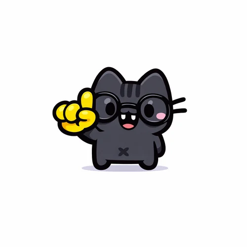

DownTown
Un servidor roleplay de Minecraft en el que podrás vivir tu propia historia. Estará abierto para todos los jugadores, tanto premium como no premium.
Un proyecto de NarellYT dedicado a crear contenido para Minecraft.
Trabajamos con el apoyo de un grupo de amigos y con la ayuda de creadores externos, sobre todo en las texturas. Nos centramos en crear experiencias de aventura, tecnología, magia y rol: todo lo que permitan tu imaginación y nuestro tiempo. Echa un vistazo a lo que estamos preparando y, si quieres crear con nosotros, ¡no dudes en ponerte en contacto!
Es mucho más que modpacks. Esto es lo que hacemos para que cada proyecto sea cómodo de jugar y divertido.
Reunimos mods, ajustamos su configuración y los probamos para que el modpack se juegue sin problemas, ya sea de supervivencia, aventura o magia.
Diseñamos paquetes de texturas que cambian el aspecto de los bloques, los ítems y los menús del juego, o que retocan detalles como la pantalla de carga. Contamos con la ayuda de creadores externos para las texturas.
Creamos mods y datapacks propios para añadir mecánicas o contenido cuando ningún mod existente hace lo que un proyecto necesita.
Cuando un proyecto necesita algo desde cero, modelamos y animamos bloques, ítems y criaturas con Blockbench.
Montamos y configuramos servidores, incluidos los de roleplay, para que cada comunidad tenga un lugar estable donde jugar.
Organizamos eventos dentro de Minecraft, abiertos a todos, para jugar, compartir y divertirnos juntos.
Colaboramos con creadores y artistas externos que nos ayudan, sobre todo con las texturas, para que cada proyecto tenga un mejor acabado.
Preparamos capturas, tráileres y contenido para presentar cada proyecto en nuestras redes.
¿Tienes un servidor o una comunidad? Diseñamos un modpack pensado solo para ti.
Cada proyecto sigue el mismo camino, de la idea a las manos de quien lo juega.
Partimos de una idea nuestra o de lo que la comunidad nos pide y nos sugiere.
Reunimos mods y, cuando hace falta, creamos texturas, modelos y mods propios.
Ajustamos la configuración y probamos el proyecto para que se juegue sin problemas.
Lo publicamos en CurseForge y Modrinth y lo presentamos con capturas y tráileres.
Este es el proyecto en el que estamos trabajando ahora. Cuando esté listo, aquí encontrarás toda la información para unirte.
Un servidor roleplay de Minecraft en el que podrás vivir tu propia historia. Estará abierto para todos los jugadores, tanto premium como no premium.

¡Hola a todos! Soy el creador de Make MC Studio. Llevo ya un buen tiempo sumergido en el mundo de la creación y personalización de modpacks para Minecraft. Todo esto empezó por mi propio amor al juego modificado; me apasiona alterar la experiencia base, experimentar y dar vida a ideas nuevas dentro del juego.
No me limito a un solo género de juego: me encanta todo lo que tenga que ver con Minecraft y sus mods. Mi objetivo principal es conectar con la comunidad, hablar con ustedes, saber qué les gusta y diseñar proyectos basados en lo que me piden o me sugieren.
Mis modpacks se publicarán en CurseForge y Modrinth, y cuando hace falta diseñar algo desde cero, uso Blockbench para el modelado. Aunque ahora mismo trabajo en solitario y sigo aprendiendo a dominar las herramientas, estoy totalmente abierto a colaborar con más personas para crear proyectos juntos, compartir ideas y ayudarnos mutuamente, o para trabajar en encargos específicos más adelante.
Estas son las personas que me apoyan y están conmigo en este proyecto.
Buscamos gente con al menos un poco de experiencia en Blockbench, programación o configuración de modpacks para sumarse al equipo por diversión y aprendizaje: no hace falta ser experto. Y si lo tuyo no es unirte sino encargar un modpack a medida para tu servidor o comunidad, también puedes escribirnos: hablamos de lo que necesitas y de cómo lo montamos.
Cuéntanos qué sabes hacer, qué te gustaría construir con nosotros o qué encargo tienes en mente.